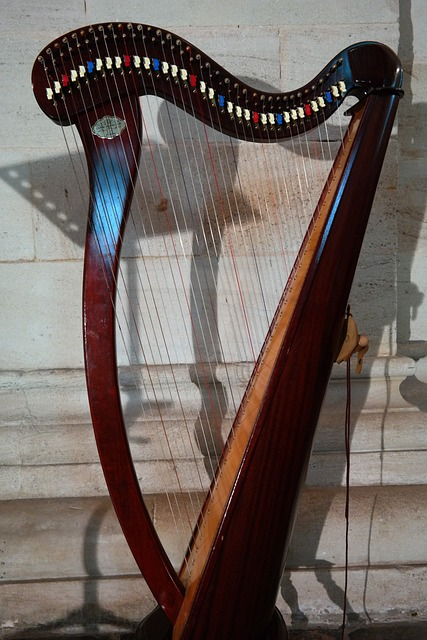
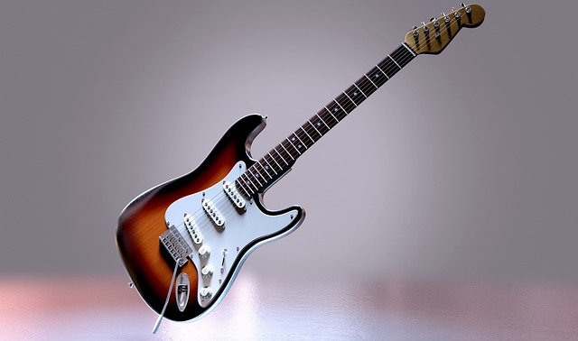
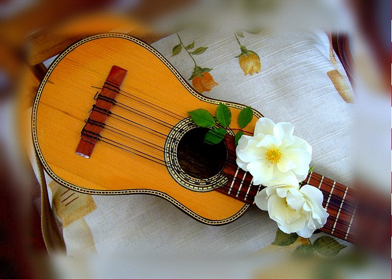
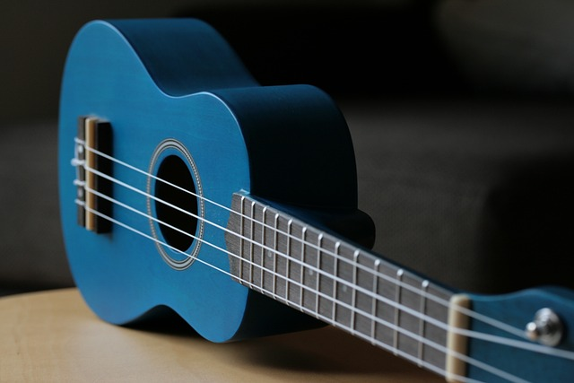
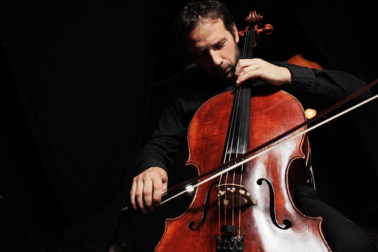

Instrumentos de cuerdas
El Arpa
Este instrumento tiene sus orígenes en Egipto y Grecia
cuyas civilizaciones fueron las primeras en teorizar la armonización musical
Guitarra Eléctrica
Concebida en 1920, la guitarra eléctrica surgió de una necesidad
de los músicos de jazz, tratando de amplificar su sonido.
Violín

El violín surgió en Italia a comienzos del Siglo XVI.
Parece haber evolucionado a partir de dos instrumentos de cuerda frotada:
la fídula y la lira da braccio.
Charango
El charango es un instrumento de cuerda de la familia de laúd, originario de la región andina de Sudamérica.
Ukelele
El Ukelele es un instrumento de cuerda pulsada que se originó en Hawái a finales del siglo XIX. Se cree que fue creado por inmigrantes portugueses que llegaron a Hawái en la década de 1870
Violonchelo
Se creó en Italia en el siglo XVI y es una modificación de la viola. Si en 1530 se creó el violín, años más tarde nacía el violonchelo.